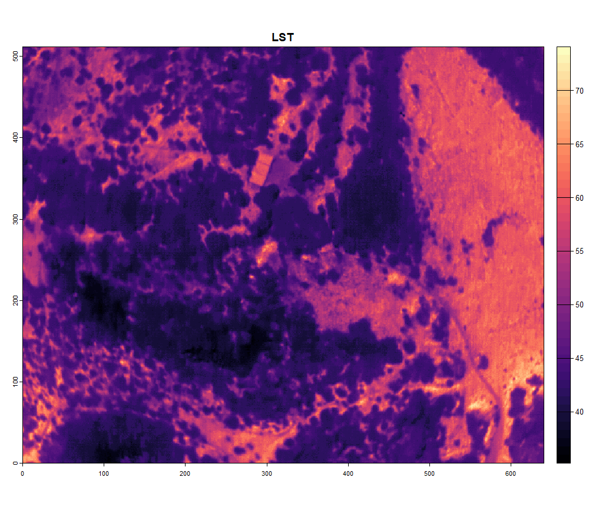

DJI cameras
DJI_cameras.RmdIn this article we will discuss the prerequisites to use the R package for processing DJI thermal cameras.
1. Setup and initialize
The thermal images from DJI cameras are stored in their own specific way. For a start they are written as JPG files instead of tiff. Furthermore, the DN values in these thermal images cannot be readily converted to temperatures. This conversion is limited to the DJI software. However, DJI released a Thermal SDK with Dynamic Link Libraries which can be incorporated into your code to process DJI thermal images. On big remark: these can only be accessed on a Windows or Linux system… In this R package the Thermal SDK is built in as well. To access the libraries, the package runs a python script in the background. So, before we can process DJI data, you first need to download and install a version of Python on your pc.
Once Python is installed, a virtual environment should be established
in order to work with python through R. The package is dependent on the
package Reticulate to link R with Python. You can hust run
the function dji_init() to initialize this virtual
environment.
library(theRmalUAV)
dji_init()2. Create a ThermalUAV
If your have a DJI camera that is compatible with this package (check
through tuav_cameras()), you have two options: - Follow the
image-based workflow - Process the data with the DJI IR Processing tool
(dirp)
In the first case I gladly refer to the vignette about the
image-based workflow. In this article we discuss the second option. The
DJI IR processing tool is built into the function
tuav_dji(). This function processes the data using the
provided libraries from DJI. The input variables are thus the same as in
their DJI
Thermal Analysis Tool software. To keep the geotags and facilitate
the process, first a ThermalUAV object should be created before using
the tuav_dji().
thermal_uav_dji_M3T <- tuav_create(path = "E:/Thermal_Project/Thermal_data_dji/DJI_20240806165425_0078_T.JPG",
# ThermalUAV objects can also consist of only 1 image if desired
camera = "DJI_M3T",
meta_csv = NA,
flight_height = 75)3. Process with DJI IR Processing tool
Once this ThermalUAV object is created, you can call the function
tuav_dji(). Please check carefully the range in which each
parameter should be provided.
dji_M3T <- tuav_dji(thermal_uav_dji_M3T,
obj_dist = 25, # limited to [1-25] in meter
rel_hum = 47.2, # should be between [20 - 100] in %
emissivity = 0.985,
refl_temp = 5,
return = TRUE,
export = FALSE,
export_path = NA)When processed, you can plot your image:
